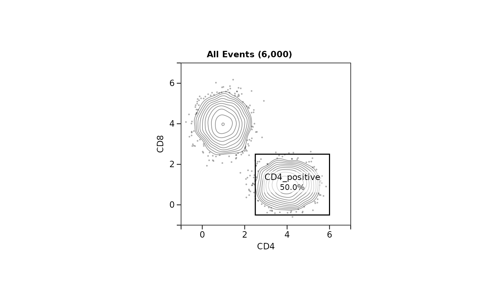

Draws a biaxial contour plot with its gates the way GateLab's Strategy and Illustration tabs
do: density contours with the events outside the lowest contour as dots, d3's axes and ticks,
the title above, each gate's outline with its name and share, and a quadrant gate as a
crosshair with the four shares. Sizes are the app's, in CSS pixels (96 to the inch), so a
panel is the same picture as in the app at any scale.
Usage
gatelabPanelGrob(
x,
y,
xlim,
ylim,
xlab = NULL,
ylab = NULL,
title = NULL,
gates = list(),
plot_size = 300,
contour_levels = 10L,
contour_threshold = 5,
bandwidth = NULL,
point_alpha = 0.35,
point_size = 1.2,
pub_style = TRUE,
gate_line_width = 1.5,
label_background = 0.6,
quadrant_labels = c("corner", "centre"),
bold_labels = FALSE,
font_sizes = c(tick = 12, axis = 12, title = 12, gate = 12),
scale = 1,
family = "",
true_hyphen = TRUE
)Arguments
- x, y
The events to draw, in display units; see
gatelabDisplayEvents.- xlim, ylim
The axis ranges, each
c(low, high).- xlab, ylab
Axis titles.
- title
The panel's title (the app writes the parent population and its count).
- gates
The gates to draw: a list, each a list with
type,name,color, andvertices(two-column matrix, display units),percent,label_offsetandlabel_placedfor an outlined gate, orcenter,quadrant_pcts(four values, in the order top left, top right, bottom right, bottom left) andquadrant_label_offsetsfor a quadrant gate. Agate_idis optional: it names the gate's entry in theanchorsattribute.- plot_size
Side of the panel in pixels, margins included.
- contour_levels, contour_threshold, bandwidth
Passed to
gatelabContour.- point_alpha
Opacity of the outlier dots; the contour lines take 0.15 more.
- point_size
Radius of the outlier dots in pixels (the app's "Point size").
- pub_style
Publication style: black gates and labels.
FALSEdraws each gate in its own colour with a white label on a box of that colour.- gate_line_width
Gate line width in pixels.
- label_background
Under publication style, opacity of the white backing behind a gate label and behind each quadrant's share, so they read over the events; 0 draws none.
- quadrant_labels
Where a quadrant gate's four shares are written:
"corner", in the corners of the plot as quadrant statistics usually are, or"centre", in the middle of each quadrant as the app places them. A share whose label was moved in the app is drawn where it was moved to.- bold_labels
Gate labels in bold.
- font_sizes
Font sizes in pixels, named
tick,axis,titleandgate.- scale
Multiplies every size, for a larger or smaller panel of the same proportions.
- family
Font family;
""takes the device's sans-serif face.- true_hyphen
R's
pdf()andpostscript()devices draw a hyphen as a minus sign, so a population namedCD4-would end in a longer dash than in the app.TRUEdraws the hyphen glyph on those devices in titles, axis titles and gate labels; tick labels keep the minus sign.
Value
A grid gTree of class gatelab_panel, plot_size * scale / 96
inches square. Its attribute anchors holds, by gate id, how far down the panel each
gate's label sits (pixels), which is where a strategy's arrows leave from, and its
attribute geometry the margins, ticks and axis-title offsets the panel was drawn
with.
Details
Ported from GateLab's renderMiniPlot with the margin, label and quadrant
rules GateLab applies to it. Contour mode only: the app's other plot modes are not drawn.
A quadrant's shares are written in the corners of the plot unless
quadrant_labels = "centre", which is where the app writes them.
The panel is a grid gTree of a fixed size. print() and plot() draw it
on a new page of the current device; grid::grid.draw() adds it to the page as it
is.
See also
gatelabStrategyPlot, which lays out one panel per gating step.
Examples
set.seed(1)
x <- c(rnorm(3000, 1, 0.5), rnorm(3000, 4, 0.6))
y <- c(rnorm(3000, 4, 0.6), rnorm(3000, 1, 0.5))
gate <- list(type = "polygon", gate_id = "g1", name = "CD4_positive", color = "#e41a1c",
percent = 50, vertices = cbind(c(2.5, 6, 6, 2.5), c(-0.5, -0.5, 2.5, 2.5)))
panel <- gatelabPanelGrob(x, y, xlim = c(-1, 7), ylim = c(-1, 7), xlab = "CD4", ylab = "CD8",
title = "All Events (6,000)", gates = list(gate))
plot(panel)
